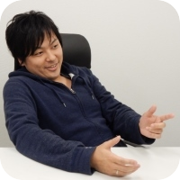
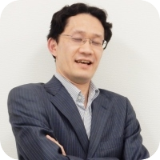
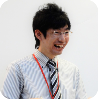
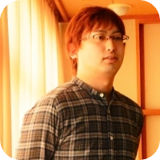
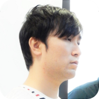
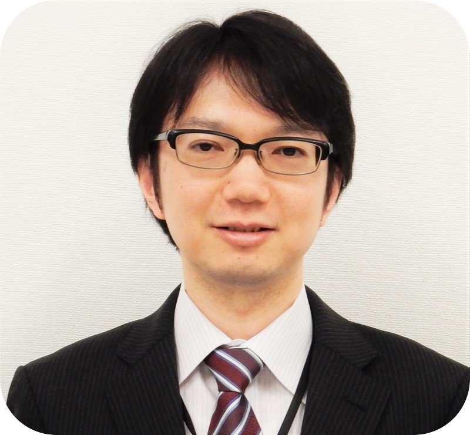
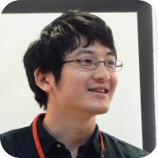

One for all , all for one
上記の文章は弊社の第12期スローガンです。
毎期毎に社員より募り、決定しています。
このスローガンには、
「1人1人が何が必要なのかをよく考え、
皆互いに助け合って自分の持っている技術を伸ばし、
会社とお客様にさらに貢献していく、そんな期にしたい」
という意味が込められています。
貴方も我が社の一員となり、
助け合いながら力を発揮してみませんか？
会社概要
社名 日本テクノクラーツ株式会社
所在地 東京都千代田区神田佐久間河岸84 サンユウビル１Ｆ
設立 2005年3月
資本金 2000万
従業員数 90名
役員 代表取締役 石渡 聡
事業内容 デベロプメント ソリューション事業
インフラ ソリューション事業
クオリティ アキュレイト ソリューション事業
ECコーディネート事業
組織図
募集要項
| 募集要項 |
プログラマー２名、ネットワークエンジニア３名 |
| 基本給 |
１７万５千～１８万(見込み) |
賞与 |
年１回 決算賞与 |
| 交通費 |
全額支給 |
年間休日 |
１２２日 |
| 休日 |
完全週休２日制 |
社会保険 |
健康保険、厚生年金、雇用保険、労災保険 |
| 勤務地 |
秋葉原又は都内近郊 |
昇給 |
年２回(２月、８月) 功績次第 |
会社説明会 兼 一次面接
1日2回、午前と午後の内容は同じです。説明会終了後、一次面接を予定しています。
再度開催が決まり次第受付を開始します。参加希望の方は下記エントリー方法にて事前にご予約ください。
マイナビからも受付中です。

弊社は、17年度より初めての新卒採用を計画している会社です。採用計画は随時調整いたします。
エントリー方法
マイナビからエントリーいただくか、本社に電話かメールでご連絡ください。
ご応募お待ちしております。
TEL:03-5835-5421
メールアドレス：saiyou@technocrats.jp
担当：森、櫻井

選考の流れ
会社説明会にて一次面接を行った方は、別途エントリーは不要です。
↓ ↓
↓ ↓
二次面接
↓
内定
社員の声

何か新しい創造が生まれると信じています。
開発推進第２課 Tさん
大手TVメーカーの液晶TVの評価検証業務。
製品としての品質を保証するため、多岐に渡る機能の仕様を把握・理解し、
単機能の動作確認からユーザ目線での評価までテスト設計・実行を行っています。
評価は開発工程の下流に位置するため、設計やコーディングに比べ
「ものづくり」の実感としては薄いかもしれません。
しかしながら、ユーザがこの製品を使うとして、
簡単に使えるのか？
確実に動かせるのか？
魅力を感じるか？
なども考慮に入れた評価を行うことにより、
より良い製品として洗練されていく過程にやりがいを感じます。
発売前の最先端のモノを実際に触って動かせることが一番楽しいです。
ただ、それだけでは単なる遊びですのでそれが発売されたときには、
ユーザにとっても楽しい体験であること、買って満足できる製品であることを目指し、
日々地道なテストと不具合の検出を行っています。
一口にテレビと言っても最先端のテレビは超多機能ですのでその分膨大な知識が必要とされ、
その最新の情報を常に把握することがとても苦労します。
当課のメンバーは、全員男、年齢層もバラバラという構成です。
もちろん人生の先輩として年齢を気にする部分もありますが、
基本的に「ものを言える雰囲気」を大切にし、
くだらないことからまじめなことまでとりあえず
「言い合える」コミュニケーションを取っています。
また、そこからきっと何か新しい創造が生まれると信じています。
基本的に業務は社外の各現場に散らばっていますが、
定期的な社内イベントや業務外イベントにより
NTC社員同士の和が保たれているところがとても良いです。
何かしたければ言えばできる、という環境も魅力の一つです。
先輩に学び、先輩を疑い、先輩を超える！
という攻めの意気込みウェルカムです！！

「この仕事しかやらない！」と決めて自身の道を狭めないで
ネットワークソリューション第1課 Mさん
サーバー：2000台・PC：3万台の大規模なネットワークの運用。
ユーザーが「サーバーやPCを増やしたい」といった要望を受付し、
ネットワークの設定を変更したり増設を行っています。
大規模な変更や増設は設計部と連携して作業を行います。
上手く連携できないと作業ミスや遅延が発生し、ユーザーに悪影響を与えますので、
設計部との連携は非常に大変なところですが、スムースに作業が進んだときは楽しいです。
課内会議後やそれ以外での懇親会です。
考え方や趣味嗜好が聞けて、その人の人となりがわかります。
会社に「あれやれ！これやれ！」と言われない。
自身の考え方や進め方で仕事ができること。
色々なことに興味をもって仕事を行ってほしい。
「この仕事しかやらない！」と決めて自身の道を狭めないで！
"目的"を示し、"目標"を持って
サーバーソリューション第1課 Mさん
お客様が日々、快適且つスムーズに業務が行えるように、
サーバ各種の構築・サポート・基盤維持・保守を実施しております。
普段の使用しているパソコンのアプリケーションや
WEBページ・インターネット等々、どうやって動いているのか!?
ということを知ることが出来、その根底・土台となる所を学んでいけるところです。
サーバ構築は、ある種の"モノ造り"であり、造り上げる達成感や、
サーバが活躍していく充実感を得ることが出来ます。
ただし、造り上げ、活躍するには"守る"を考えなければいけません。
機器の故障、内・外から不正・攻撃、日々見守ることが欠かせません。
また、IT技術は"日進月歩"、常に技術を学んでいく事も欠かせません。
只、だからこそ、"達成感"・"充実感"が人一倍得られていけるのです。
"仲間"という意識を持つことで、周りには助けてくれる人が居る事、
そして自分も周りを助けていけることを実感できます。
その繋がりを意識することが第一歩だと思いました。
"繋がり"・"仲間"・"チーム"を大切に考える会社です。
所属課・所属部での会議しかり、社内イベント等、色んな所で"仲間"が感じられます。
"目的"を示して下さい。"目標"を持って下さい。
これからは"支えられる側"から"支える側"へと変わっていきます。
ご自身の指標・意志が求められます。
その上で、"仲間"として一緒に成し遂げましょう。

イチバン"を目指して努力すること自体に大きな価値がある
ビジネスソリューション第1課 Iさん
ヘルプデスクのオペレーター業務をしています。
金融機関の社内に常駐し、ＰＣや業務アプリケーションの操作やトラブルに関して、
電話での技術サポートが主な仕事です。十数人のチームで対応しています。
電話の向こうにいる利用者が、いくら時間かけても解決できなかった事が、
電話対応によって一瞬で解決に至った時はとても達成感があります。
その時には利用者の声のトーンも明るくなり、気持ちがいいです。
また、ヘルプデスクの存在意義を最も感じる瞬間でもあります。
電話の相手も人間ですので、本当に色々な方がいます。
社内ヘルプデスクではごく少数ですがクレーマーのような方もいますし、
逆におもしろキャラの人もいたり。
よく電話をかけてくる方とは割と仲良くなって笑いながら話したりすることもあります。
そういった意味では、どんな相手でも円滑に対応をこなすために
柔軟で臨機応変に対応できる力が求められます。
大変なところとしては、システムにトラブルが発生したりすると、
利用者からの問い合わせが急増して電話が鳴り止まなくなり、意図せず忙しくなるところです。
部署や役職の垣根を越えた社員同士のコミュニケーションが取りやすい会社です。
社員旅行なども他のIT企業にはあまりないと思います。
どんなことでも良いです。イチバンを目指してください。
イチバンになれるかどうかは関係ありません。
目指して努力すること自体に大きな価値があります。

一言で表すと「縁の下の力持ち」
モバイルネットワーク第２課 Yさん
携帯電話と直接交信する、携帯電話網の末端にあたる装置をご存知ですか？
電柱やビルの屋上、地下鉄ホームの天井などに設置されているもので、
"基地局"と言います。
その"基地局"に対して決められたデータを投入をしたり、
新しく"基地局"を開設するためのデータ投入などを行っています。
一言で表すと「縁の下の力持ち」です。
多くの利用者が快適な通信を行う上で、欠かせない仕事なので
出先などで携帯電話を使用しているところを見ると、
やっていてよかったと思える場面が多々あります。
今後、計画されている新しい通信方式などに一早く触れられるところは楽しいです。
ですが、繁忙期になると次々と業務が入ってくるので、
作業中に翌日の準備などを行わなければならない場合があり、
行っている作業と準備の両立が必要になる時があります。
メールや社内で使用しているSNSなどを使用し、綿密に情報共有などを行って、
現場が離れているメンバーともコミュニケーションを取っています。
また、一部のメンバーとはLINEなども使用して、情報共有などもしています。
社長を始め、数多くの社員さんとの壁が感じられないほど話しやすい人ばかりなので
社内の集まりや、飲み会などでコミュニケーションが取りやすいところが好きです。
社員旅行などを通じて今まで話したことが無かった社員さんとも話せる点も魅力の1つです。
NTCは自分自身のスキルや知識、コミュニケーション力といったものがどんどん伸びていく会社です。
また、IT業界が未経験の方でも現場先の研修や実践などを通じ、経験が積まれていくので、
最初は未経験でも業務を続けていくと更なるステップアップも目指せるところでもあります。
是非、NTCに入って私たちと一緒に頑張っていきましょう！

まだ世に出ていない製品に一早く触れ、
ワクワクしながらテストしています
評価・検証第1課 Eさん
現在デジタルカメラの評価業務に携わっています。
デジタルカメラと言いましても実際の業務ではミラーレス一眼レフ、コンパクトデジタルカメラ、
ハンディカム、最近ではアクションカムや少し特殊なカメラなど多岐に渡ります。
その中でも主にミラーレス一眼レフ、コンパクトデジタルカメラを
メインとして評価業務に携わっています。
そんな私ですが今の現場に入った頃はカメラに関しては興味が無かった為、
知識も全くありませんでした。
とはいえ物を知らないからと言って他の人に負けるわけにはいかなかったので、
カメラの最低限の知識を学び、仕様を読み込んで少しでもカメラを知る努力をしました。
その為、今では不具合検出のトップメンバーとして活躍しています。
昨今のIT開発において海外への業務委託(オフショア)の波がある為、
開発だけでなく評価業務に関してもオフショアへの移行を迫られています。
私の現場でも不具合の検出率で
たびたびオフショアとの比較を迫られています。
我々1人のコストでオフショアならば3人は雇えると言われているからです。
しかし、我々もチーム一丸となってお客様に納得頂ける様に質の良い報告を心がけるなどし、
オフショアの3倍以上のパフォーマンスを発揮出来るように、
日々自分に出来ることを精一杯行っています。
自分の携わった製品が発売された後にそれを持っている利用者様がいると
やはりちょっと気になりますね。
『あれはもしかして！』とか思ってついついガン見してしまうことなんかも少なくありません。
評価業務というのは不具合の報告だけでなく、
ユーザー観点として実際に使ってみて不便だと思えばそれを報告することもあります。
その様な感じでユーザーに近い立場にある為、利用者様に対して少し親近感が出てきてしまいます。
口コミなどで満足しているコメントを見ると、
また次も引き続き満足して貰える様な製品を目指して頑張ろうと思えます。
評価業務の楽しいところの1つとしては、
まだ世に出ていない製品をいち早く触れる機会があるところだと思います。
他には無い全く新しい機能だったりすると
「どんなものだろう」「どうしてくれよう」とワクワクしながらテストしています。
そして狙い通りにたくさんの不具合が検出出来る時や、たまたま見つけた不具合を紐解いて
原因まで突き止める時のパズルのピースがはまって行くような感じが楽しいですね。
しかし、その反面新規追加や変更点の周りには不具合もたくさん潜んでいる為、
それが原因でスケジュールが遅れてくることもあるので後が大変です。
後は楽しいというか面白いところだと、
お店にある注文する為のタブレット端末とかあるじゃないですか。
同じ仕事をしている人達で飲み会など行った時にあれがあると、
大体フリーズしないかとか、なんとかフリーズさせてやろうとか、
他に変なところにボタンの判定が無いかとか探したりする人なんか居たりします。
主に僕のことなんですけどね。
IT業界と言えば、まず思い浮かべるのは開発や
ネットワークのイメージが浮かんで来るかもしれません。
しかし、開発の下支えとして評価・検証の業務もあるということを知っておいて貰いたいです。
評価業務はExcelなどの最低限の操作が出来れば特別な知識が無くても入れる為、
実際の現場でも様々な業界から転職してきた方達も多く活躍されています。
IT業界に興味はあるが知識が無いという方でも、
まずは弊社で評価業務を通じて業界に触れてみながら、
自分のやりたいことに合わせたキャリアを考えてみてはいかがでしょうか。

モバイルネットワークは今後も伸びしろのある部門
モバイルネットワーク第1課 Uさん
某キャリアの携帯電話の電波改善の為の調査・工事・保守全般。
主に、現場の作業員からのデータの解析、調査・工事の進捗管理、
報告書のチェック・提出業務等プロジェクト全般を担当しております。
今や、日常生活に欠かせなくなった携帯電話の通話・通信エリアの
拡大品質の向上に貢献できるところですね。
普段何気なく使っている携帯電話の通信・通話の仕組みが分かるところ。
また、日々刻々と通信の技術が発達するため、新たな通信方式を
勉強・理解しなければならないところが楽しいところでもあり、大変なところでもあります。
社員とのコニュニケーションの取り方は、3か月に1度の部内会議、
月に1度の課内会議、後は電話・メールでのやり取りがメインとなります。
課内会議ではそれぞれの現場での仕事内容等を近況報告として発表しています。
社長・常務の役員はもちろん、部課長先輩社員も良い意味でフレンドリーに接してくれて、
とてもアットホームなところが魅力だと思います。
東京オリンピックに向けて通信インフラの整備等で
モバイルネットワークは今後も伸びしろのある部門です。
一緒により良い電波環境の構築をやってみませんか？

自己研鑽を積んでいけば結果に繋がる
開発推進第１課 Wさん
現在は、某企業様のWebコンテンツの制作業に関わっています。
開発やテスト業務等ですね。
色々な現場に出向し、様々な業種の方と協力し
プロジェクトを進めていくことにやりがいを感じます。
現場現場で求められるスキルは異なるため、
常にお客様の期待に応えることが大変です。
期待に応えることができた時にお客様から
感謝の意を伝えていただけるのが嬉しく感じます。
社員はほぼ出向しているため、日常的には会うことはありません。
そのため月１回の課内会議では、お互いの近況を報告したり、
困っていることがあれば相談しあったりしています。
社員に任せている部分が多く自由な雰囲気があるところです。
最初は色々とわからず大変だとは思いますが、
少しずつ自己研鑽を積んでいけば結果に繋がります。
ですから無理のない範囲で一緒に頑張りましょう！
©2016 Nihon Technocrats Corporation All Rihgts Reserved